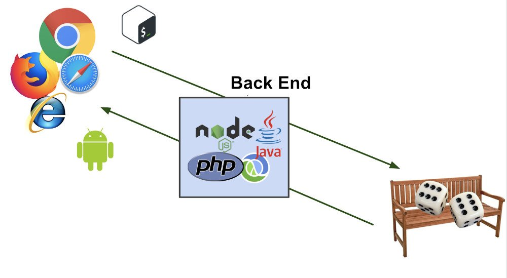

Habilidades Importantes para Aprender
Um desenvolvedor Back-End trabalha no servidor, banco de dados e APIs por trás de uma aplicativo web. A descrição do trabalho é diferente da de um desenvolvedor Front-End, mas os dois papéis trabalham juntos para criar um trabalho que seja ao mesmo tempo funcional e amigável ao usuário.
Por exemplo, um desenvolvedor Front-End cria uma página em um site com um botão que um cliente pode clicar para recuperar dados sobre seus pedidos anteriores. O desenvolvedor Back-End escreveria o código que permite que o botão pegue os dados corretos do banco de dados. Esses dados são entregues de volta ao frontend, onde o desenvolvedor do Front-End determina como eles são exibidos para o visitante.

Linguagens e Framework Back-End
Framework é, de forma básica, um facilitador. Ele traz diversas soluções já pré-definidas, que descomplicam o trabalho dos profissionais no desenvolvimento de aplicativos e outros projetos digitais. Afinal, a atuação de um programador pode ter muito de criatividade, mas também traz aspectos mecânicos, de repetição de tarefas, que seriam maçantes sem a possibilidade de automatização.
Como os Frameworks representam um conjunto de códigos prontos, que podem ser replicados para a criação de funções que aparecem com frequência no desenvolvimento de um projeto digital, eles poupam tempo e permitem elevar a produtividade. Segue abaixo as Linguagens de Programação e Frameworks mais utilizados no Back-End
1. Python / Django
A linguagem Python é multiparadigma, o que significa que podemos programar com base em diferentes estilos de programação, como a programação funcional, a procedural e a orientada a objetos. Python é uma linguagem multiplataforma, pois tem versões para diversos sistemas operacionais, entre eles: Windows, Linux e macOS. É uma linguagem interpretada, pois ela não gera aquivos executáveis como acontece na linguagem C, por exemplo.
O Django foi construído por desenvolvedores experientes, o framework cuida de grande parte do aborrecimento do desenvolvimento da Web, para que você possa se concentrar em escrever seu aplicativo sem precisar reinventar a roda.
Utiliza uma arquitetura nomeada Model View Template, que é bem semelhante da já conhecida MVC. A Mode View Controller você encontra em linguagens de programação como Java, C#, Delphi, Ruby, PHP, JS. Consiste em um objetic-relational mapper (ORM) que faz a mediação entre os modelos de dados (definidos como classes de Python) e um banco de dados relacional (“Model”), um sistema para processamento de solicitações HTTP com um sistema de modelos da web (“View”) e um despachante de URL baseado em expressão regular (“Controller”).
2. Ruby / Ruby On Rails
A linguagem de programação Ruby é considerada uma das mais simples dentro do universo da programação.Ela conquistou uma grande comunidade de usuários por unir leitura amigável e complexidade técnica. Empregada principalmente no desenvolvimento de aplicações web, mas também pode ser utilizada em outras aplicações de software. O Ruby está disponível em Windows, Linux e muitos outros sistemas, sendo considerado multiplataforma.
Ruby on Rails é um framework de desenvolvimento de aplicações web e utiliza a linguagem de programação Ruby. É constituído por um conjunto de bibliotecas que facilitam no desenvolvimento. Ele fornece uma estrutura básica, mas completa. É um dos frameworks que está ganhando o coração de milhares de devs pelo mundo.
Como a maioria dos frameworks atuais, o Ruby on Rails utiliza a estrutura MVC (Model-View-Controller). Para demonstrar melhor, desenhei a imagem abaixo: O Controller é responsável pela interação do Model, enviando as requisições e controlando aplicações de recebimento e envio de dados. Resumindo, o Model é a parte onde fica o banco de dados. E a View é a página que o usuário ver, o lugar onde há interações. Essa estrutura faz com que o projeto seja melhor desenvolvido e organizado pelo dev, fazendo com que sejam aproveitados em 100% os recursos disponibilizados pela framework.
3. Php / Laravel
PHP é um acrônimo recursivo para PHP: Hypertext Preprocessor (Pré-Processador de Hipertexto), que originalmente se chamava Personal Home Page (Página Inicial Pessoal). Ele também é um subconjunto de linguagens de scripts como JavaScript e Python. A diferença é que costuma ser mais usado para comunicação do lado do servidor (back-end).
Laravel é um Framework PHP utilizado para o desenvolvimento web, que utiliza a arquitetura MVC e tem como principal característica ajudar a desenvolver aplicações seguras e performáticas de forma rápida, com código limpo e simples, já que ele incentiva o uso de boas práticas de programação e utiliza o padrão PSR-2 como guia para estilo de escrita do código.
Para a criação de interface gráfica, o Laravel utiliza uma Engine de template chamada Blade, que traz uma gama de ferramentas que ajudam a criar interfaces bonitas e funcionais de forma rápida e evitar a duplicação de código.
4. Java / Spring
O Java foi criado pela Sun Microsystems, em 1995 e, em 2008, foi adquirido pela empresa Oracle Corporation, a qual pertence atualmente. Ele consiste em uma linguagem de programação orientada a objetos, baseada em classes e que permite o desenvolvimento de aplicações pelos profissionais de TI através da escrita do código uma única vez.
Inicialmente desenvolvido para criação de aplicações web escritas em Java, e anteriormente denominado como Spring Framework, o Spring é um ecossistema de desenvolvimento para facilitar a criação de aplicações Java utilizando diversos módulos independentes.
Com o Spring é possível ter maior domínio do projeto que está sendo desenvolvido, tendo como maior característica o suporte à infraestrutura direto na aplicação, permitindo assim que os times de desenvolvimento possam se concentrar na parte lógica da aplicação, sem precisar se preocupar desnecessariamente com questões de configuração de ambiente.